VRayFastSSS2
This page provides information on the Subsurface Scattering Material.
Overview
VRayFastSSS2 is a material that is primarily designed to render translucent materials like skin, marble, etc. The implementation is based on the concept of BSSRDF originally introduced by Jensen et al. (see the references below). I t is an approximation of the sub-surface scattering effect observed in the physical world , while still being fast enough to be used in practice.
VRayFastSSS2 is a complete material with diffuse and specular components that can be used directly, without the need of a VRayBlendMtl material. More precisely, the material is composed of three layers: a specular layer, a diffuse layer, and a sub-surface scattering layer.
UI Path: ||Material Editor window|| > Material/Map Browser...
||Material Editor window|| > Material/Map Browser > Materials > V-Ray > VRayFastSSS2

||V-Ray Toolbar|| > V-RayMtl (hold left click to display a dropdown list)
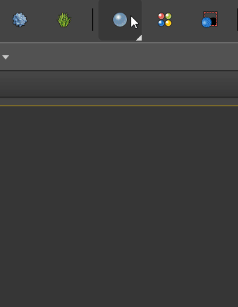
General Parameters
Preset – Specifies one of several available preset materials. They can be used directly or as a starting point for building custom materials. Most of the presets are based on measured data provided by Jensen et al. in [3]. They come with a scatter radius value measured in cm so depending on the scale of your scene, the Scale value might need adjusting.
Scale – Controls the depth of scattering by multiplying the Scatter radius. This can be useful when your scene was not modeled to scale. The default value of 1 means that the Scatter radius is used as it is. For example, to render a 1:10 scale model, set the scale to 0.10. For more information, see the Scatter Radius and Scale example below.
IOR – Specifies the index of refraction for the material. Most water-based materials like skin have IOR of about 1.3.
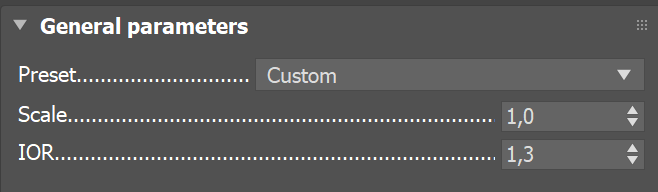
Example: Scatter Radius and Scale
This example shows the effect of the Scatter radius and Scale parameters. Note how increasing them allows the inside (Scatter coefficient) color to show up more and leads to a softer look.
Scatter radius = 2 cm, Scale = 1
Scatter radius = 4 cm, Scale = 1
Scatter radius = 8 cm, Scale = 1
Scatter radius = 8 cm, Scale = 2
Diffuse and sub-surface scattering layers
Overall color – Controls the overall coloration for the material. This color serves as a filter for both the diffuse and the sub-surface components. The effect is a color tint, where pure white means neutral and doesn’t introduce tinting.
Diffuse color – Specifies the color of the diffuse portion of the material. The Diffuse amount needs to be greater than 0 for it to have any effect.
Diffuse amount – Controls the strength of the diffuse component of the material by blending between the diffuse and the sub-surface layers. When set to 0, the material does not use the diffuse component. When set to 1.0, the material shows no sub-surface scattering. Values in between can be used to “harden” the surface while retaining the SSS effect inside when using larger Scatter radius values. A texture in the Diffuse amount can be used as a mask for the SSS layers to simulate dust or paint on the surface.
Color mode – Allows you to determine which method is used to control the sub surface scattering effect.
Sub-surface color + scatter radius – This mode uses a general Sub-surface color and an inside Scatter color that becomes visible in backlit parts of the objects that are thinner than the scaled Scatter radius. It is suitable for relatively opaque materials and works best when Single scatter is set to Simple or Raytraced (Solid). The preset materials are designed to work in this mode: skin, marble, potato etc.
Scatter coefficient + fog color – This mode uses a Scatter coefficient to define the outside scatter layer color and translucency, and a Fog color for the respective inside values. The translucency for both components is multiplied by the scaled Scatter radius. This mode allows for control of the SSS components similar to that in the VRayMtl. It is designed for translucent or refractive materials like juice or ice and works best when Single scatter is set to Raytraced (Solid) or Raytraced (Refractive).
Sub-surface color – Specifies the general color for the sub-surface layer of the material. Note that the Sub-surface color value is filtered/multiplied by the Overall color and both filter the Scatter color. For more information, see the Sub Surface Color example below.
Scatter color – Specifies the internal scattering color for the material that is visible in thin, backlit parts of the objects. It also affects the depth of scattering: brighter colors cause the material to scatter more light and appear translucent; darker colors result in a more diffuse-like look. The Scatter color is filtered/multiplied by both the Sub-surface color and the Overall color to achieve the final result. For more information, see the Scatter Color example below.
Scatter coefficient – Specifies the outside color for the sub-surface layer of the material and also affects its outer translucency. Brighter colors cause the material to look frosted and less transparent, while darker colors result in a clearer effect. Note that the Scatter coefficient color value is filtered/multiplied by the Overall color. Available when the Color Mode is Scatter coefficient and fog color. For more information, see the Scatter Coefficient example below.
Fog color – Specifies the inside or backlit color of the object and affects its inner translucency. Brighter colors cause the material to scatter more light and appear more translucent; darker colors result in more diffuse-like look. The Fog color is filtered/multiplied by both the Scatter coefficient and the Overall color to achieve the final result. Available when the Color Mode is Scatter coefficient and fog color. For more information, see the Fog Color example below.
Scatter radius – Controls the depth of scattering light inside the material for both color modes. Smaller values cause the material to have shallower layer of scattered light and to appear more diffuse-like. Higher values define a deeper layer where the material scatters light and make it look more translucent. Note that the Scatter radius value is always specified in centimeters (cm) regardless of 3ds Max' current working unit and is multiplied by the Scale to calculate the effective depth of scattering. For more information, see the Scatter Radius and Scale example below.
Phase function – Specifies a value between -1.0 and 1.0 that determines the general way light scatters inside the material. Its effect can be somewhat likened to the difference between diffuse and glossy reflections from a surface. However, the phase function controls the reflection and transmittance of a volume. A value of 0.0 means that light scatters uniformly in all directions (isotropic scattering). Positive values mean that light scatters predominantly forward. Negative values mean that light scatters mostly backward. This, depending on the direction of illumination leads to changes in the blending between the two SSS colors: boosts one or the other. Most water-based materials (e.g. skin, milk) exhibit strong forward scattering, while hard materials like marble exhibit backward scattering. For more information, see the Phase Function example or the Phase Function: Light Source example below.

Example: Sub-Surface Color
This example and the next demonstrate the effect of and the relation between the Scatter color and the Sub-surface color parameters. Note how changing the Sub-surface color changes the overall appearance of the material, whereas changing the Scatter color only modifies the internal scattering component.
The Scatter color is set to beige.
Sub-Surface Color = Beige
Sub-Surface Color = Red
Sub-Surface Color = Blue
Sub-Surface Color = Green
Example: Scatter Color
The Sub-surface color is kept to green.
Scatter Color = Beige
Scatter Color = Red
Scatter Color = Blue
Scatter Color = Green
Example: Scatter Coefficient
This example demonstrates the effect of and the relation between the Scatter Coefficient and the Fog color parameters when the Scatter Mode is set to Scatter Coefficient and Fog Color. The Fog color is set to white for all the images.
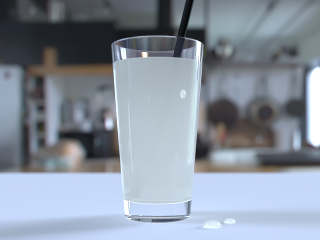
Scatter Coefficient = White
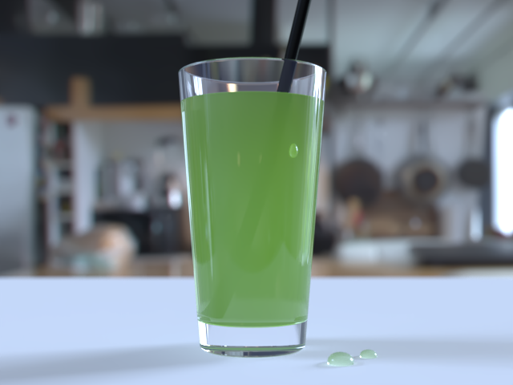
Scatter Coefficient = Green
Scatter Coefficient = Yellow
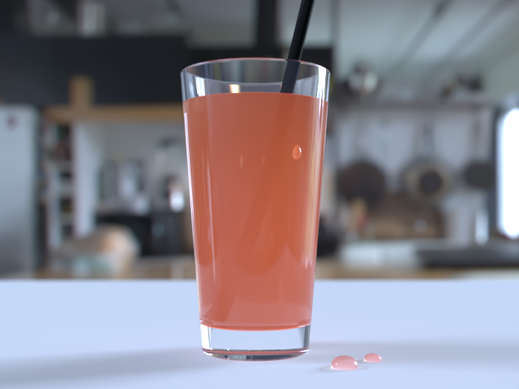
Scatter Coefficient = Red
Example: Fog Color
This example demonstrates how Fog Color works together with the Scatter Coefficient color. The Scatter Coefficient color is white for all the images.
Fog Color = White
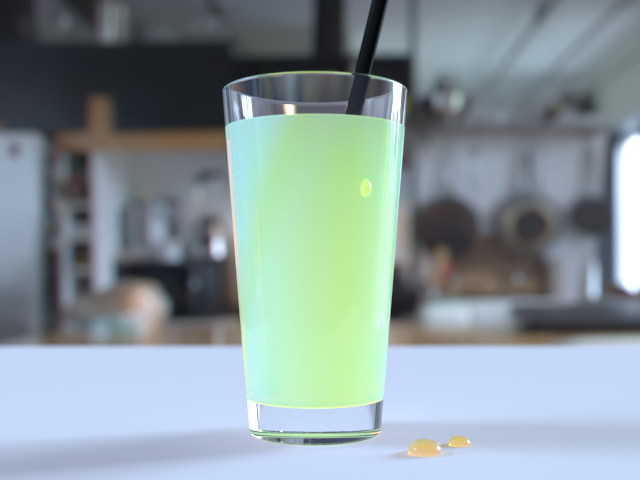
Fog Color = Orange
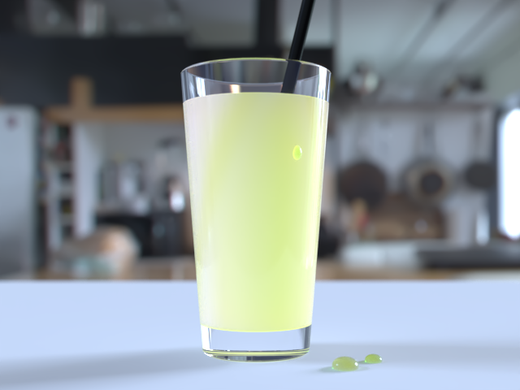
Fog Color = Green
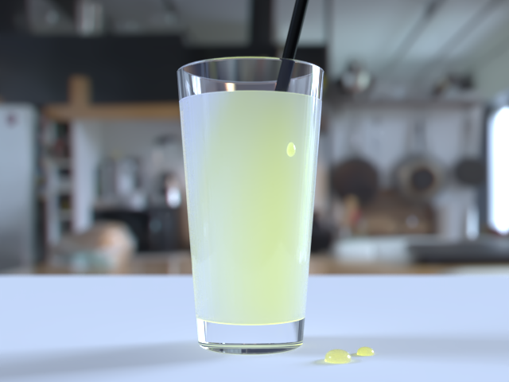
Fog Color = Yellow
Example: Phase Function
This example shows the effect of the Phase function parameter. This parameter can be likened to the difference between diffuse reflection and glossy reflection on a surface. However, it controls the reflectance and transmittance of a volume. Its effect is quite subtle, and mainly related to the single scattering component of the material.
Phase function = -1.0 (Backward Scattering)
Phase function = 0.0 (Isotropic Scattering)
Phase function = 1.0 (Forward Scattering)
Phase function = -0.5 (Backward Scattering)
 Phase function = 0 (Isotropic Scattering)
Phase function = 0 (Isotropic Scattering)

Phase function = 0.5 (Forward Scattering)
The red arrow represents a ray of light going through the volume; the black arrows represent possible scattering directions for the ray.
Example: Phase Function: Light Source
This example demonstrates the effect of the Phase function parameter when there is a light source inside the volume. The material uses Color mode: Scatter coefficient and fog color, large Scatter radius and Single scatter: Raytraced (Refractive).
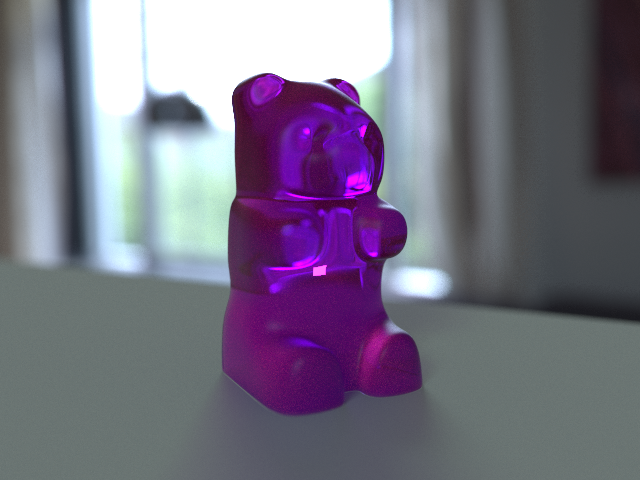
Phase function = -0.9
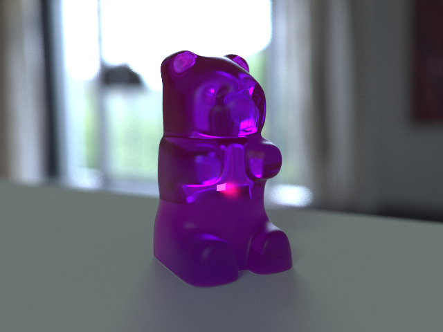
Phase function = 0.0
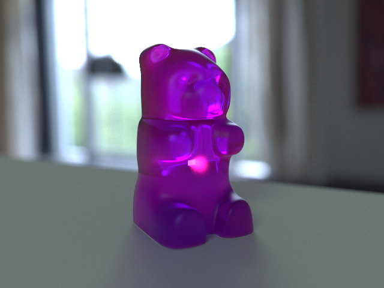
Phase function = 0.7
Specular Layer Parameters
Specular color – Determines the specular color for the material.
Specular amount – Determines the specular amount for the material. Note that there is an automatic Fresnel falloff applied to the specular component, based on the IOR of the material.
Specular glossiness – Determines the glossiness (highlights shape). A value of 1.0 produces sharp reflections, lower values produce more blurred reflections and highlights.
Trace reflections – Enables the calculations of glossy reflections. When off, only highlights are calculated.
Reflection depth – The number of reflection bounces for the material.
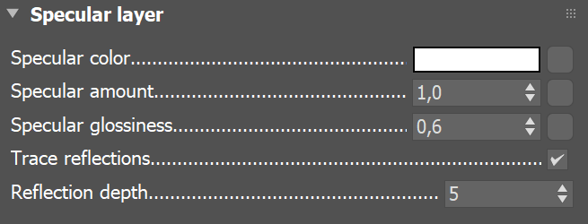
Options
Single scatter – Controls how the single scattering component is calculated.
None – No single scattering component is calculated.
Simple – The single scattering component is approximated from the surface lighting. This option is fast and useful for relatively opaque materials like skin, where light penetration is normally limited.
Raytraced (solid) – The single scattering component is accurately calculated by sampling the volume inside the object. Only the volume is raytraced; no refraction rays on the other side of the object are traced. This is useful for materials with more pronounced sub-surface scattering effect like marble or milk, which at the same time are relatively opaque.
Raytraced (refractive) – Similar to the Raytraced (solid) mode, but refraction rays are traced as well. This option is useful for transparent materials with more pronounced sub-surface scattering effect like water or glass. In this mode, the material also produces transparent shadows.
Refraction depth – Determines the depth of refraction rays when the Single scatter parameter is set to Raytraced (refractive) mode.
Scatter GI – Controls whether the material accurately scatters global illumination. When disabled, the global illumination is calculated using a simple diffuse approximation on top of the sub-surface scattering. When enabled, the global illumination is included as part of the surface illumination map for multiple scattering. This is more accurate, especially for highly translucent materials, but may slow down the rendering quite a bit.
Cutoff threshold – Specifies a threshold below which specular reflections are not traced. V-Ray tries to estimate the contribution of specular reflections to the image, and if it is below this threshold, the effect is not computed. Do not set this to 0.0 as it may cause excessively long render times in some cases. This parameter is not available when the renderer is set to GPU.

VRayFastSSS2 is now always rendered using the Raytraced multiple scattering algorithm. Its Prepass-based and Object-based modes are deprecated.
Since V-Ray Next, Update 2 the direct lighting contribution of the single scatter Simple component in the VRayFastSSS2 material is isolated in the VRayLighting render channel.
In V-Ray version 3.6, the direct lighting contribution of the Simple single scatter of the VRayFastSSS2 material went to the VRaySSS2 render channel.
Setting the single scattering to None , makes the effect disappear.
Example: Single Scatter Mode
This example shows the effect of the Single scatter mode parameter.
For relatively opaque materials, the different Single scatter modes produce quite similar results (except for render times). In the following set of images, the Scatter radius is set to 1.0 cm.
In the second set of images, the Scatter radius is set to 50.0 cm. In this case, the material is quite transparent, and the difference between the different Single scatter modes is apparent. Note also the transparent shadows with the Raytraced (refractive) mode.
Single scatter = Simple
Single scatter = Raytraced (solid)
Single scatter = Raytraced (refractive)
Single scatter = Simple
Single scatter = Raytraced (solid)
Single scatter = Raytraced (refractive)
Notes
-
When using either Raytraced (solid) or Raytraced (refractive) mode for the Single scatter parameter, you need to use VRayShadows for standard lights in order to get the correct results.
-
The VRayFastSSS2 material computes sub-surface scattering only during the final image rendering. During other GI calculations phases (e.g. light cache), the material is calculated as a diffuse one.
-
For the reason explained above, VRayFastSSS2 will render as a diffuse one with the progressive path tracing mode of the light cache.
-
You can layer several VRayFastSSS2 materials using a VRayBlendMtl material in order to recreate more complex sub-surface scattering effects. In this case, any raytraced single scattering are only calculated for the base material, but multiple scattering, reflections etc. work correctly for any layer.
References and Links
Here is a list of links and references used when building the VRayFastSSS2 material.
[1] H. C. Hege, T. Hollerer, and D. Stalling, Volume Rendering: Mathematical Models and Algorithmic aspects
An online version can be found at http://www.cs.ucsb.edu/~holl/publications.html
Defines the basic quantities involved in volumetric rendering and derives the volumetric and surface rendering equations.
[2] T. Farrell, M. Patterson, and B. Wilson, A Diffusion Theory Model of Spatially Resolved, Steady-state Diffuse Reflectance for the Noninvasive Determination of Tissue Optical Properties in vivo , Med. Phys. 19(4), Jul/Aug 1992
Describes an application of the diffusion theory to the simulation of sub-surface scattering; derives the base formulas for the dipole approximation used by Jensen et al. (see below).
[3] H. Jensen, S. Marschner, M. Levoy, and P. Hanrahan, A Practical Model for Subsurface Light Transport, SIGGRAPH'01: Computer Graphics Proceedings, pp. 511-518
An online version of this paper can be found at http://www-graphics.stanford.edu/papers/bssrdf/
Introduces the concept of BSSRDF and describes a practial method for calculating sub-surface scattering based on the dipole approximation derived by Farrell et al. (see above).
[4] H. Jensen and J. Buhler, A Rapid Hierarchical Rendering Technique for Translucent Materials, SIGGRAPH'02: Computer Graphics Proceedings, pp. 576-581
An online version of this paper can be found at http://graphics.ucsd.edu/~henrik/papers/fast_bssrdf/
Introduces the idea of decoupling the calculations of surface illumination and the sub-surface scattering effect in a two-pass method; describes a fast hierarchical approach for evaluating subsurface scattering and proposes a reparametrization of the BSSRDF parameters for easier user adjustment.
[5] C. Donner and H. Jensen, Light Diffusion in Multi-Layered Translucent Materials, SIGGRAPH'05: ACM SIGGRAPH 2005 Papers, pp. 1032-1039
An online version of this paper can be found at http://graphics.ucsd.edu/papers/layered/
Provides a concise description of the original BSSRDF solution method presented by Jensen et al; extends the model to multi-layered materials and thin slabs using multipole approximation.